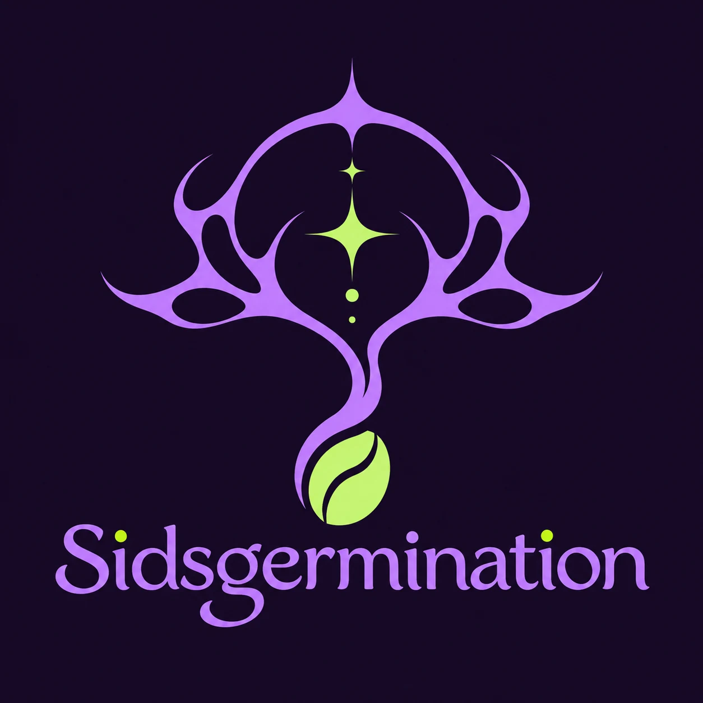
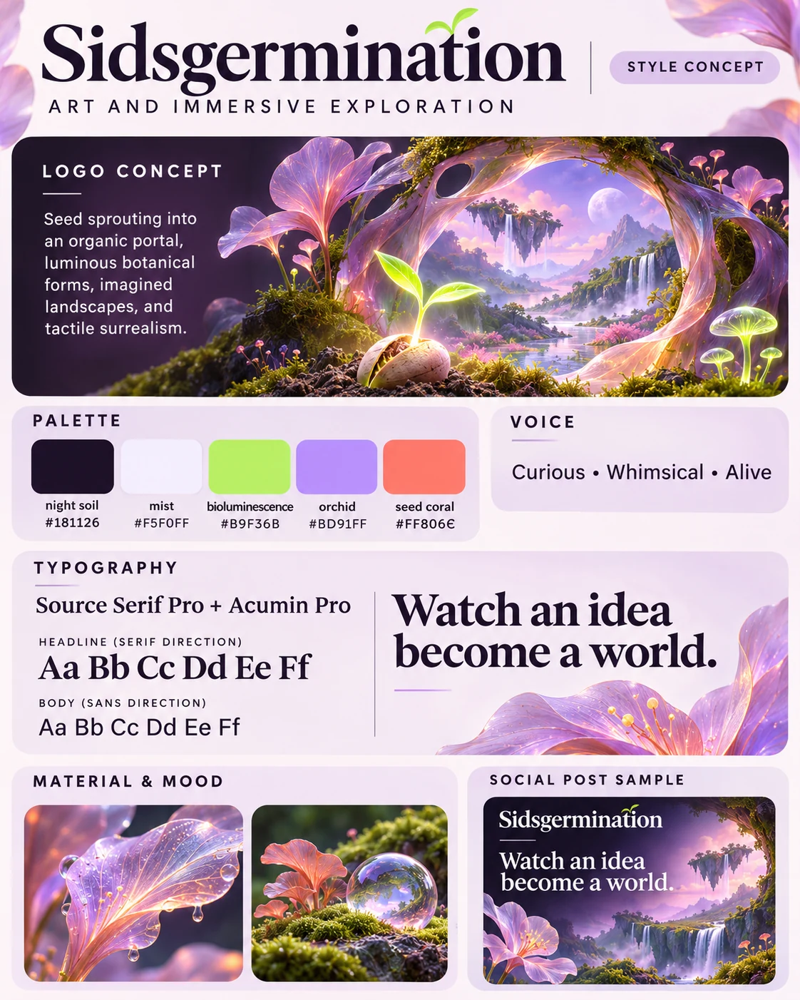

Campaign
The Human Variable
A six-panel exploration of human judgment in AI-assisted creative work. The campaign uses luminous botanical imagery and expressive editorial compositions.
Explore campaign ↗Brand strategy · Art direction · Identity system
Sidsgermination is my evolving creative practice exploring growth, identity, nature, and imagined worlds through AI and spatial art.
Brand promise: An intimate view into ideas taking form.
Creative line: Watch an idea become a world.
Build a recognizable identity for an exploratory practice without forcing every experiment into a commercial or finished-product format. The system needed to feel whimsical, sensual, curious, and alive while remaining readable and useful online.


The supplied brand concept combines a seed sprouting into an organic portal, luminous botanical forms, imagined landscapes, and tactile surrealism. The approved purple branching emblem and Sidsgermination wordmark are the primary logo. The original purple branching emblem and wordmark anchor the visual identity.
Typography direction: Source Serif Pro headlines, Acumin Pro body, with accessible web fallbacks. Typeface usage depends on verified web licenses.
Campaign
A six-panel exploration of human judgment in AI-assisted creative work. The campaign uses luminous botanical imagery and expressive editorial compositions.
Explore campaign ↗Immersive environment
An earlier world I built, connecting spatial experimentation and imaginative storytelling.
Enter the world ↗Begin with observation. Experiment with materials, tools, and space. Record the decisions and revisions that shape the work. Distinguish AI-generated scenes from documentary photography and credit source material appropriately.
Status: This documents the brand direction and initial website. The original logo and style card are part of this proposed update; the carousel imagery remains pending; no audience growth or performance outcomes are claimed.